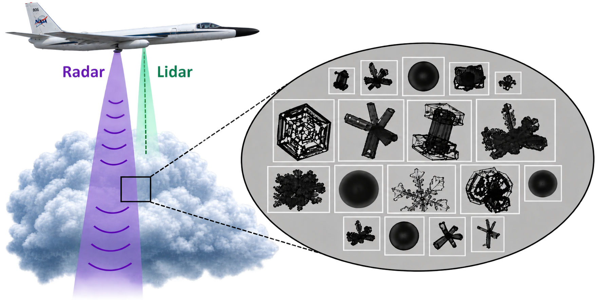

Research
My research focuses on using remote sensing and in situ observations to better understand cloud microphysical properties in midlatitude winter storms. I am particularly interested in what radar and lidar measurements can tell us about the ice crystals and supercooled liquid water hidden inside clouds. My latest work involves developing probabilistic approaches that better represent the microphysical complexity and heterogeneity of these cloud systems.
Ph.D. Dissertation Research
Leveraging Probabilistic Frameworks to Investigate Cloud Microphysical Properties in Midlatitude Winter Storms: Ice Crystal Habit Identification and Supercooled Liquid Water Detection
University of Washington · Ph.D. in Atmospheric and Climate Science
Winter storms contain complex mixtures of ice crystal habits and cloud phases that can vary substantially within a single radar or lidar sample volume. Despite this particle heterogeneity, most current hydrometeor classification algorithms adopt a deterministic approach, assigning a single particle type or phase to each remote sensing observation. My dissertation explores how probabilistic frameworks can be used to address and better represent this microphysical heterogeneity. Using coordinated airborne observations collected during NASA's IMPACTS field campaign, I focus on two complementary problems: identifying distributions of ice crystal habits from radar and lidar observations and estimating the probability of supercooled liquid water occurrence using remote sensing observations.
